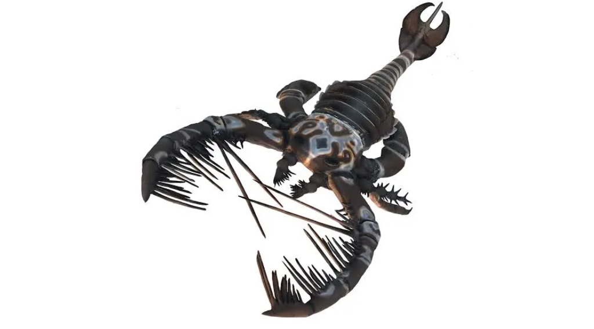
Paleozoico
Artropodos
Ordovícico
Carbonífero - Pérmico
Peces
Devónico
Sinapsidos
Pérmico
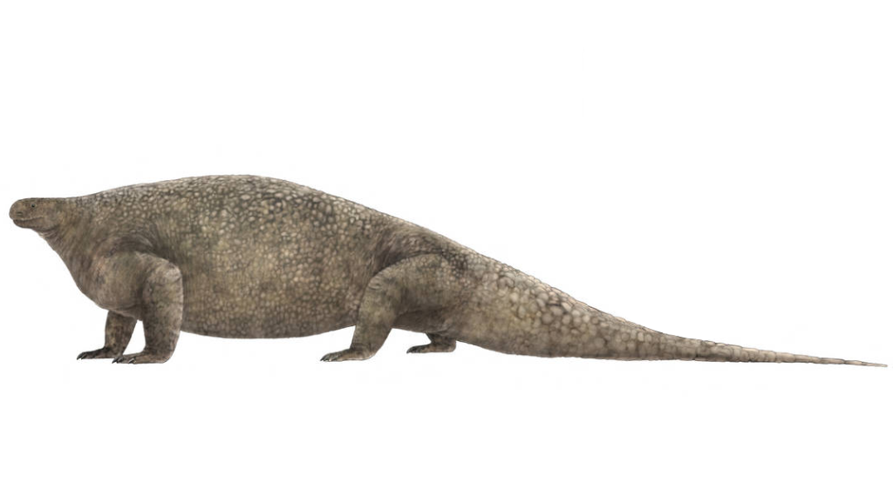
Cotylorhynchus
romeri, bronsoni, hancocki
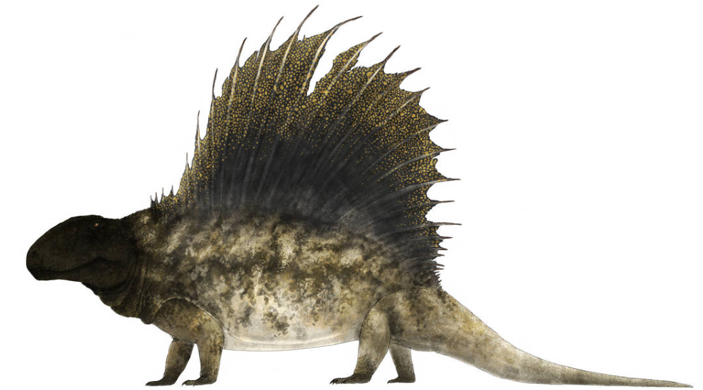
Dimetrodon
limbatus, angelensis, booneorum, cruciger, dollovianus, giganhomogenes, grandis, incisivus, kempae (Posiblemente un nomen dubium), longiramus, loomisi, macrospondylus, milleri, natalis, occidentalis, teutonis
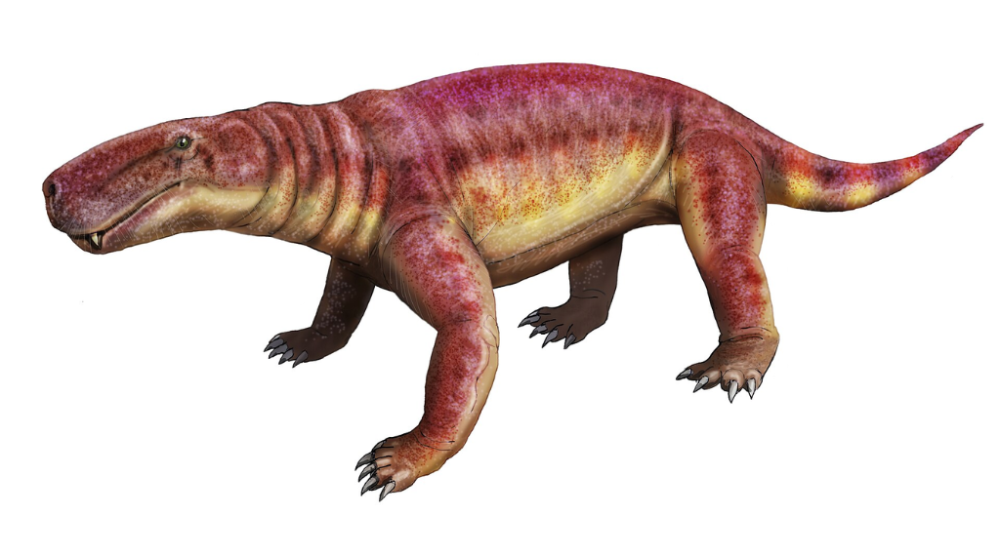
Inostrancevia
africana, alexandri, latifrons, uralensis
Mesozoico
Arcosauromorfos
Triásico
Sinapsidos
Triásico
Dinosaurios
Jurásico
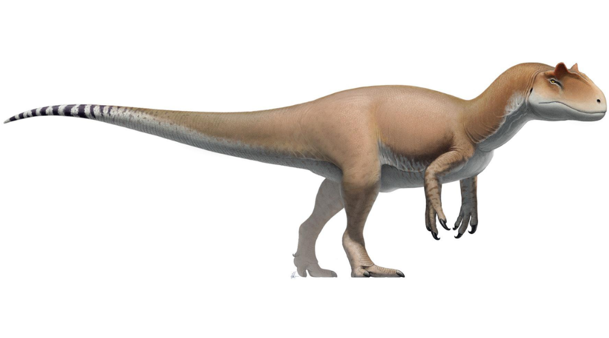
Allosaurus
fragilis, europaeus, jimmadseni, anax
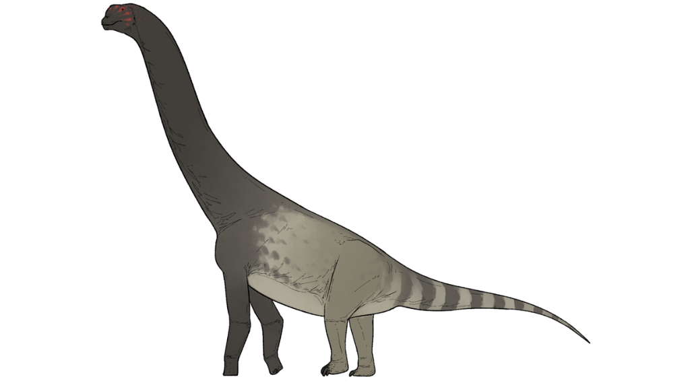
Bicharracosaurus
dionidei
Cretacico
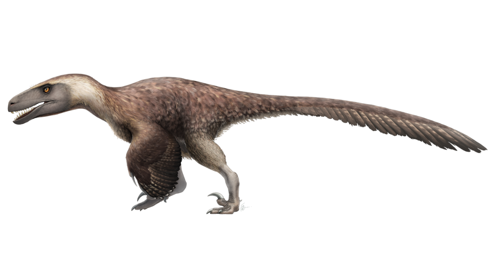
Utahraptor
ostrommaysi

Spinosaurus
aegyptiacus, mirabilis
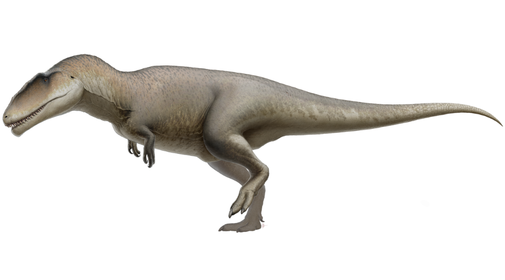
Carcharodontosaurus
saharicus, iguidensis
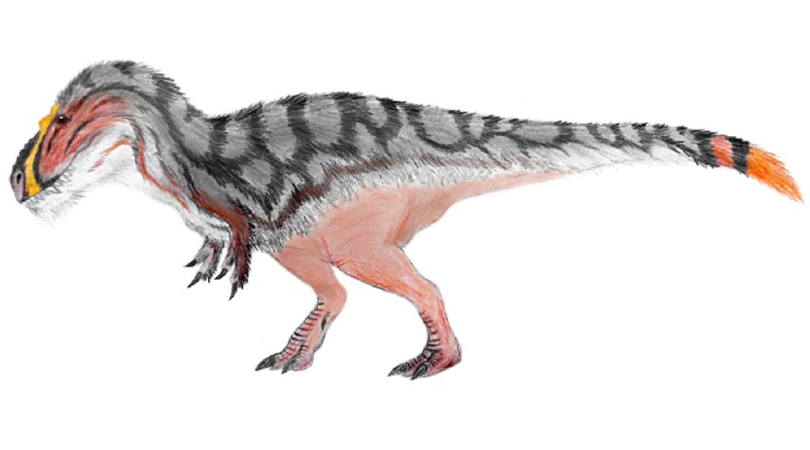
Nanuqsaurus
hoglundi
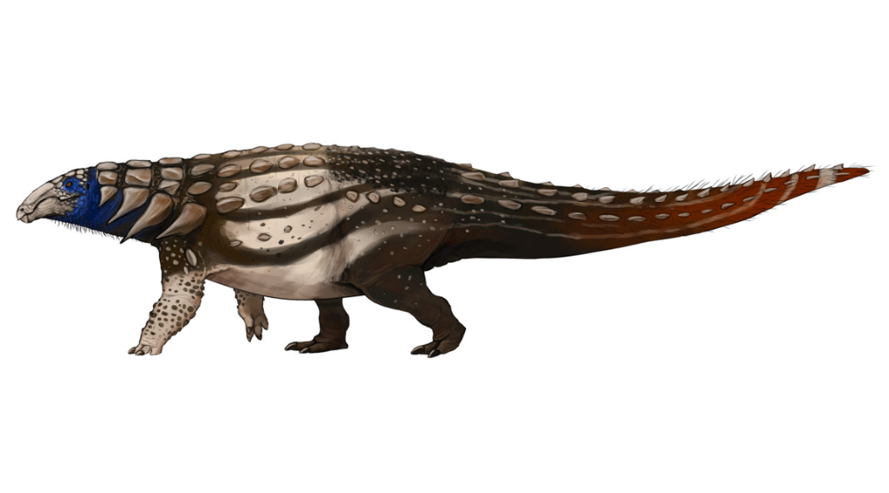
Denversaurus
schlessmani
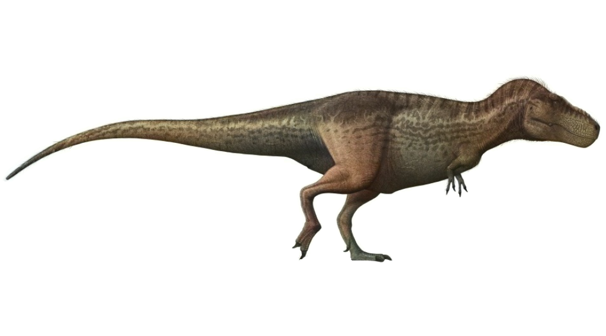
Tyrannosaurus
rex, mcraeensis
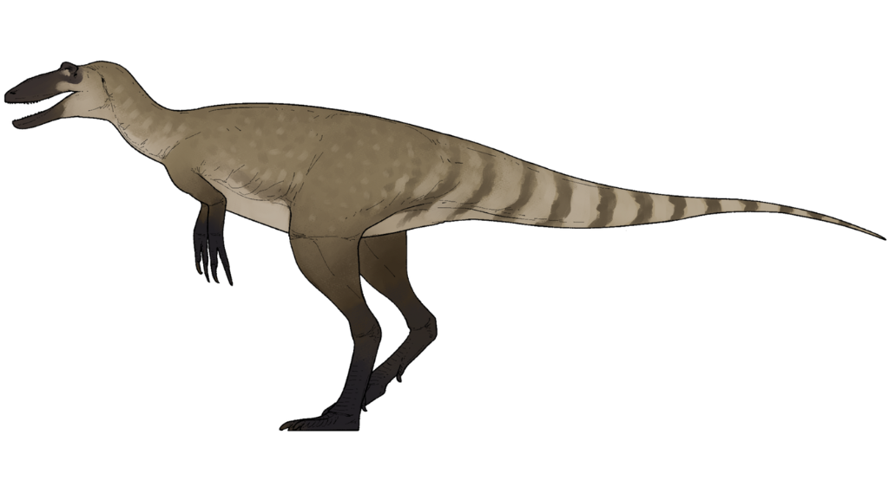